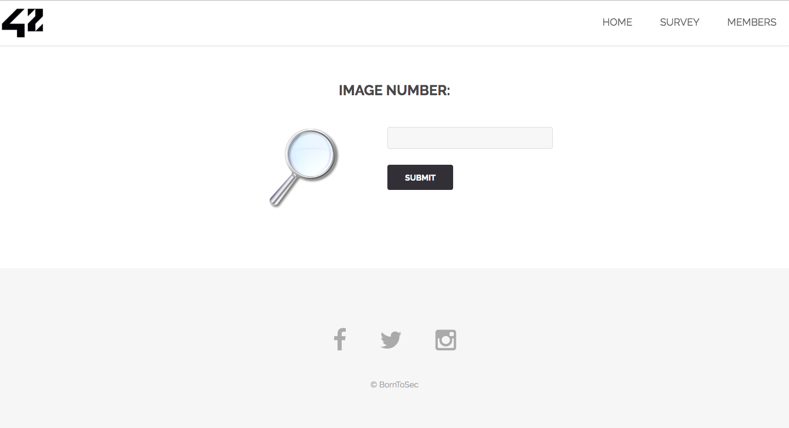

Si on vas sur la page de recherche d'image du site
si on met la commande :
1 or 1=1 UNION select table_name, column_name FROM information_schema.columns
dans le chamsp de recherche et que l'on valide le formulaire on obtient les informations sur les differentes tables de la base de donnee
ici celle qui nous interesses sont les informations de l'image 1
on creer la requette : 1 or 1=1 UNION select url, comment from list_images
depuis les informations recues, et on la met dans le champs du formulaire te on valide le formulaire
On peut voir la phrase : If you read this just use this md5 decode lowercase then sha256 to win this flag !
Donc on decrypt le md5 de 1928e8083cf461a51303633093573c46 avec un site fait pour ce qui nous donne : albatroz
On fait le sha256 de albatroz qui nous donne le flag
Utiliser la pdo plutot que mysqli